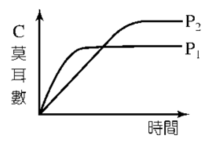

平衡系 $\text{A}_{(g)} + 2\text{B}_{(g)} \rightleftharpoons \text{nC}_{(g)}$，n 為係數。定溫時在不同的總壓 $\text{P}_1$ 及 $\text{P}_2$ 其餘條件均不變下，$\text{C}$ 的莫耳數與時間的關係圖如右，則下列敘述何者正確？

正確答案： (D) $\text{P}_1 > \text{P}_2$ , $n > 3$
【兩步驟推理】